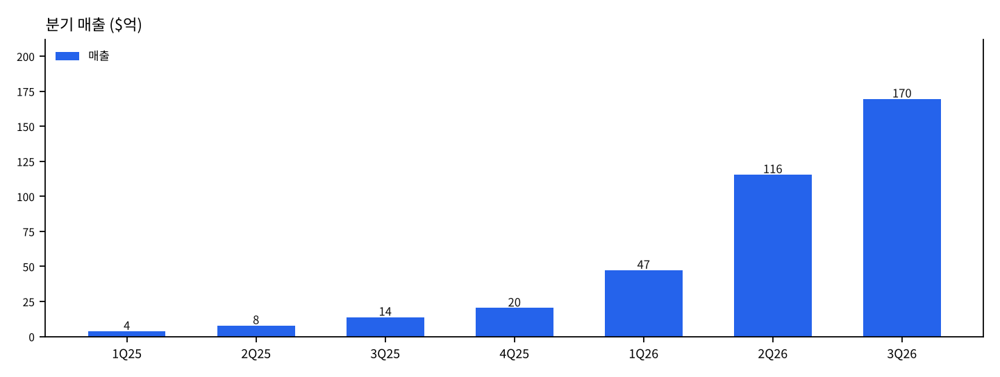
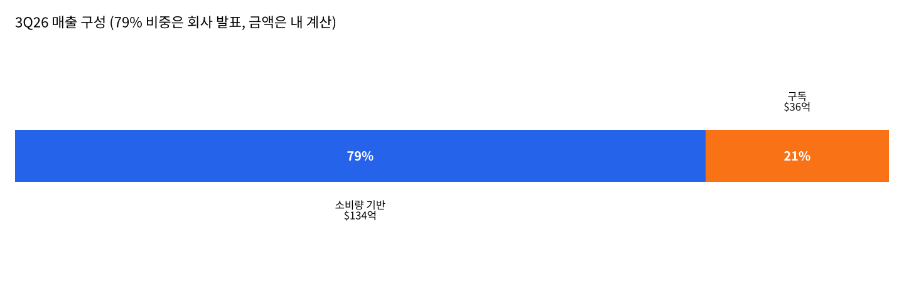
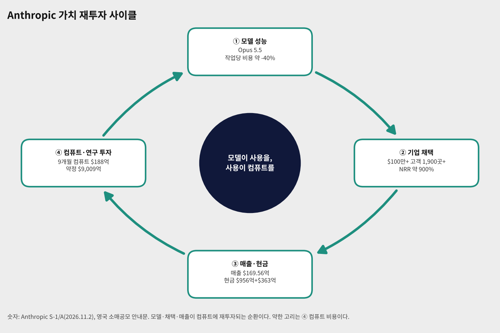

Anthropic은 안전성을 앞세운 AI 연구소이자 기업용 AI 판매 회사다. 모델 사용량(토큰)에 따라 돈을 받는 API 매출이 가장 크고, 개인·팀 구독과 Claude Code·Cowork 같은 제품이 함께 늘고 있다.
| 항목 | 내용 |
|---|---|
| 종목 | Anthropic, PBC (ANT) · NASDAQ · 소프트웨어(AI 모델) · 델라웨어 공익법인(PBC), 샌프란시스코 |
| 최근 분기(3Q26) | 매출 $169.56억, 조정 영업이익 $25억 |
| 핵심 상품 | Claude 모델(Opus 5.5 등), Claude Code, Claude Cowork, Claude.ai, 개발자 플랫폼 |
| 직원 수 | 공식 인원 미확인. TTM 매출 ÷ 직원당 매출($660만 이상)으로 보면 약 5,000명대(내 계산) |
| 상장 | 2026.11.19 나스닥 상장, 공모가 $83, 공모 $813억 |
| 멀티플 | PER·PEG는 순손실이라 산출 불가, P/S는 08~10 항목 참조 |
| 직책 | 인물 | 역할·특징 |
|---|---|---|
| CEO·이사 | 다리오 아모데이(Dario Amodei) | 공동 창업자. 연구와 안전을 전략 축으로 둠 |
| 사장·이사회 의장 | 다니엘라 아모데이(Daniela Amodei) | 공동 창업자 |
| CFO | (확인 필요) | 제공된 공시 발췌에 이름이 없음 |
| 지배구조 | Long-Term Benefit Trust(LTBT), 창업자 LLC | LTBT는 이사 과반을 선임·해임하고, 창업자 LLC는 Class F 1주로 의결권 50.1%를 가짐. 나스닥 규정상 통제회사 |
경영 스타일: 연구 우선, 안전 우선. 회사는 스스로 "무엇보다 연구소"라고 설명하고, 공익법인과 장기이익신탁 구조로 사명(책임 있는 AI 개발)을 주주 이익과 함께 둔다. 직원 기부 매칭(Class N 주식)으로 9개월 $21억 비용이 들었다.
Opus 5.5는 Opus 5 대비 고객 작업당 비용을 약 40% 줄였다고 회사가 밝혔다. 직원당 TTM 매출 $660만 이상(전년 $140만).
Claude Code에 이어 Cowork(2026.1 연구 미리보기)로 기업 업무 전반에 확산하는 방향이다.
다음 실적발표는 세 가지 질문에 답하는 자리다.
1. 컴퓨트 총이익률이 52%대로 돌아오나?
2. 분기 성장이 어느 속도로 이어지나?
3. 고객 집중과 약정이 현금흐름을 해치나?
한 줄 판정 규칙: 첫 질문(컴퓨트 총이익률)이 회복되면 약한 고리(④ 컴퓨트 비용)가 풀린다.
일정: 상장 후 첫 실적(4Q26)은 트레이딩뷰 추정 2027.03.03이며 회사의 공식 일정은 확인 필요다. 락업은 약 155억 주가 180일·365일 제한을 받고 36억 주는 더 일찍 풀릴 수 있다.
| 분기 | 매출 | 순이익 | EPS | 조정 EPS | 특이 사항 |
|---|---|---|---|---|---|
| 1Q25 | $3.8억 | -$65.9억 | -0.50 | – | |
| 2Q25 | $7.9억 | -$63.8억 | -0.49 | – | |
| 3Q25 | $13.8억 | -$121.4억 | -0.93 | – | |
| 4Q25 | $20.4억 | -$168.6억 | -1.29 | – | |
| 1Q26 | $47.3억 | -$144.4억 | -1.10 | – | 분기 영업손실(9개월 합계 -$12.6억에서 역산, 내 계산) |
| 2Q26 | $115.5억 | -$663.1억 | -5.07 | – | 영업이익 +$9.7억(첫 영업흑자), 조정 영업이익 약 $22억 |
| 3Q26 | $169.6억 | -$232.9억 | -1.78 | – | 영업손실 $5.7억, 조정 영업이익 $25억. 순손실 대부분은 전환사채·파생 평가손실 |
매출·순이익·EPS(GAAP 희석)는 트레이딩뷰 스캐너, 영업손익은 S-1/A와 보도 값이다. 분기 정렬은 오래된 분기→최신이다. 상장 첫 해라 4Q24 이전 분기는 수집하지 못해 7개 분기만 표시했다.
Anthropic은 조정 EPS를 따로 발표하지 않아 조정 EPS 열은 –로 두었다. 대신 회사는 조정 영업이익(주식보상·비현금 기부·Bartz 합의 제외)을 발표한다. 순손실에는 전환사채·파생부채·SAFE 공정가치 변동 손실(9개월 $943억)이 크게 들어 있어 영업 실적과 구분해서 봐야 한다.

흐름 요약: 3Q26 매출 $169.6억는 전년 동기 $13.8억 대비 +1,127%, 최근 4분기 매출 합계는 $352.8억다. 순손실은 -$232.9억이고 대부분이 비현금 평가손실이다. 9개월 영업손실은 $12.6억, 조정 영업이익은 $40.81억(마진 12%)이다.
| 항목 | 내용 | 3Q26 금액 | 비고 |
|---|---|---|---|
| 소비량 기반(API 등) | 토큰 사용량에 비례해 청구 | $133.9억 | 전체의 79%(내 계산) |
| 구독 | Claude.ai·팀·기업 구독 | $35.6억 | 나머지 21%(내 계산) |

사용량 기반 매출이 대부분이라 고객이 쓰는 만큼 매출이 늘고 줄어드는 구조다. 회사는 매출의 거의 절반이 클라우드 마켓플레이스를 거친다고 보도됐다(제3자 요약, 확인 필요).
Anthropic은 인류의 장기 이익을 위해 안전하고 책임 있는 고급 AI를 개발하고 유지하는 것을 목표로 한다.
| 축 | 내용 |
|---|---|
| 사명 | 책임 있는 고급 AI 개발(공익법인) |
| 제품 | Claude 모델, Claude Code, Cowork |
| 고객 | 연매출 $100만 이상 고객 1,900곳 이상 |
| 자원 | 컴퓨트 약정 약 $9,009억 |

| 항목 | 가격 | 공모가 대비 |
|---|---|---|
| 공모가 | $83.00 | – |
| 시가 | $111.50 | +34.3% |
| 장중 고가 | $115.10 | +38.7% |
| 장중 저가 | $95.05 | +14.5% |
| 현재가(보고서 작성 시점) | $98.43 | +18.6% |
상장 거래일이 1일뿐이라 5·20·50·100·200일 이동평균선과 55일 돈키언 채널, 1·3·6·12개월 모멘텀 기준가를 만들 수 없다. CTA 8개 신호는 모두 산출 불가이며 점수도 매기지 않는다. 상장 후 20일(단기 교차), 50일, 200일이 차례로 채워지면 사이트 일일 갱신이 자동으로 신호를 계산한다.
시가 $111.50 대비 현재가는 -11.7%, 장중 변동폭은 $20.05(20%)다. 확정 종가가 아니므로 장 마감 후 값이 달라질 수 있다.
| 악재 요인 | 내용 | 강도 |
|---|---|---|
| 컴퓨트 약정 | 구매·임대 약정 약 $9,009억(12개월 내 $707억). 매출이 꺾이면 부담 | 높음 |
| 컴퓨트 총이익률 하락 | 3Q 42%(2Q 52%) | 중간 |
| GAAP 순손실 | 9개월 -$1,040억(대부분 비현금 평가손실). 상장 후 평가손실이 줄지는 확인 필요 | 중간 |
| 고객·공급 집중 | 상위 5개 고객 약 25%, 클라우드 공급사가 투자자이기도 함 | 중간 |
| 락업 해제 | 약 155억 주가 180일·365일 제한, 36억 주는 더 일찍 가능 | 중간 |
| 지배구조 | 창업자 LLC 의결권 50.1%, 통제회사 | 참고 |
| 티커 | 회사 | PER(TTM) | PEG | P/S | EPS 성장(YoY) |
|---|---|---|---|---|---|
| ANT | Anthropic | – | – | 36.51배 | – |
| MSFT | Microsoft | 26.4배 | 0.73 | 10.92배 | +36% |
| GOOGL | Alphabet | 14.8배 | 0.17 | 7.41배 | +89% |
| AMZN | Amazon | 21.3배 | 0.29 | 3.67배 | +75% |
| PLTR | Palantir | 109.7배 | 0.47 | 55.33배 | +234% |
비교 결론: Anthropic은 순손실이라 PER·PEG를 계산할 수 없다. TTM 매출 기준 P/S 36.5배는 Microsoft·Alphabet·Amazon보다 높고 Palantir보다 낮다. 3Q 매출 연환산 기준으로는 19.0배다.
현금은 9월말(공모 전) 기준이다. 공모금 $813억(총액)은 11.20 종결 예정이라 아래 표에 합치지 않고 따로 적었다.
| 지표 | 값 | 출처 | 해석 |
|---|---|---|---|
| 현금·현금성자산 | $956억 | S-1/A(2026.9.30) | |
| 단기투자 | $363억 | S-1/A | 현금+단기투자 $1,319억 |
| 총부채(트레이딩뷰) | $1,349.9억 | 트레이딩뷰 스캐너 | 전환사채·리스 등 포함 여부 확인 필요 |
| IPO 조달(총액, 종결 예정) | $813억 | 공모 보도 | 9월말 현금에 포함되지 않음 |
| 누적 조달 자본 | $1,411억 | FWP | 공모 전 |
| 12개월 내 약정 | 약 $707억 | FWP | 컴퓨트·리스 |
| 전체 약정 | 약 $9,009억 | FWP | 2030년 말까지 약 $4,516억, 대부분 나머지는 2031~2045 |
| 9개월 영업손실 | -$12.6억 | S-1/A | 영업 현금흐름은 이 발췌에 없음 |
| 기준 | 매출 | P/S | 비고 |
|---|---|---|---|
| 내 계산(전체 클래스 주식 130.9억 주 × 장중 가격 ÷ 최근 4분기 매출) | $352.8억 | 36.51배 | 시총은 정렬용 데이터에서만 사용 |
| 내 계산(3Q 매출 ×4 연환산) | $678.2억 | 18.99배 | 성장 지속을 가정한 단순 연환산 |
| 동종(트레이딩뷰) | – | MSFT 10.92배 · GOOGL 7.41배 · AMZN 3.67배 · PLTR 55.33배 | 11.20 |
해석: 현금과 단기투자가 12개월 내 약정($707억)보다 크고 공모금이 더해진다. 다만 약정 총액이 $9,009억이라 장기로는 매출이 계속 늘어야 약정을 감당한다(내 해석).
Anthropic은 EBITDA 대신 조정 영업이익을 발표한다(주식보상·비현금 기부·Bartz 합의 제외). PER·PEG는 순손실이라 산출하지 않는다.
| 지표 | 값 | 산출 |
|---|---|---|
| 3Q26 조정 영업이익 | $25억(마진 15%) | S-1/A, 2Q는 $22억(19%) |
| 9개월 조정 영업이익 | $40.81억(마진 12%) | S-1/A, 전년 9개월 -$31.33억 |
| 3Q26 GAAP 영업손익 | -$5.67억 | S-1/A, 2Q는 +$9.74억 |
| 컴퓨트 총이익률 | 3Q 42% | 2Q 52% |
| PER(GAAP TTM) | – | TTM EPS 음수 |
| PER(조정 TTM) | – | 조정 EPS 미발표 |
| 방식 | PER | EPS 성장률 | PEG | 판정 |
|---|---|---|---|---|
| GAAP EPS (TTM -$9.24) | – | – | 산출 불가 | 참고 |
| 조정 EPS | – | – | 산출 불가 | 참고 |
판정: PEG 산출 불가(TTM EPS가 음수이고 조정 EPS가 발표되지 않음). PEG 기준은 1.0 이하 투자 적격, 0.5 이하 적극 매수지만 순손실 기업은 적용하지 않는다. 대신 P/S와 조정 영업이익 흐름을 본다.

Anthropic의 사이클: 모델이 좋아지면 기업 사용이 늘고, 그 매출이 컴퓨트와 데이터에 재투자돼 다음 모델을 더 좋게 만든다.
| 고리 | 현재 숫자·근거 |
|---|---|
| ① 모델 성능 | Opus 5.5가 Opus 5 대비 고객 작업당 비용 약 40% 절감(회사 발표) |
| ② 기업 채택 | 연매출 $100만 이상 고객 1,900곳 이상, NRR 약 900% |
| ③ 매출·현금 | 3Q 매출 $169.56억(+47% QoQ), 9월말 현금+단기투자 $1,319억 |
| ④ 컴퓨트·연구 투자 | 9개월 컴퓨트·인프라 비용 $188.1억, 구매 약정 약 $9,009억 |
사이클의 특징: 약한 고리는 ④ 컴퓨트 비용이다(총이익률 52%→42%). "(내 해석)"은 보고서 수치가 아닌 해석이다.